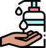
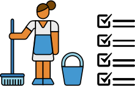
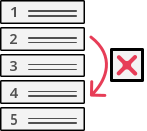
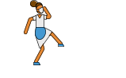

Grupos de riesgo, Elementos de protección, ART y Cobertura.
La campaña #EsTrabajoNoEsAyuda, es una campaña interinstitucional promovida por la Oficina de País de la Organización Internacional del Trabajo (OIT) para la Argentina junto con los principales sindicatos del sector para visibilizar la importancia del trabajo doméstico y fortalecer el diálogo entre trabajadoras domésticas y empleadores, brindando información en torno a sus derechos y obligaciones, en el contexto de la pandemia.
El trabajo doméstico no es una ayuda, sino un trabajo como cualquier otro. Esto significa que trabajadoras y empleadores tenemos derechos y obligaciones, que deben cumplirse.
Trabajadoras
Empleadores
Normativa vigente, Cambio de categoría, Ajustes salariales y Reclamos.
Despidos, Condiciones de trabajo, Trabajo registrado y derechos.
Trabajo y seguridad
Las trabajadoras domésticas pertenecientes a grupos de riesgo no deben concurrir a trabajar y sus empleadores deben seguir pagándole la totalidad del sueldo.
+info. Mayores de 60 años
. Embarazadas
. Patologías crónicas
Totalidad del sueldo
Quedarse en casa
Los empleadores deben proveer elementos de protección personal a las trabajadoras domésticas en sus lugares de trabajo.
+info

Alcohol
Máscara
Guantes
Tapaboca
Las ART brindan cobertura y otorgan las prestaciones correspondientes a trabajadoras domésticas registradas que contraigan la COVID-19 desempeñando su trabajo.
+info

Remuneración
Durante el tiempo que rija la normativa vigente por la COVID-19, el empleador debe pagar la totalidad del sueldo y los aportes a la trabajadora doméstica, sin ningún tipo de descuento. +info
Corresponde la totalidad del sueldo
Cambiar la categoría de una trabajadora doméstica, cuando no corresponde, es un fraude laboral. +info

Los incrementos salariales de las trabajadoras domésticas se definen en la Comisión Nacional de Trabajo de Casas Particulares y son difundidos por AFIP y los sindicatos del sector. +info

Una trabajadora cuenta con 2 años para reclamar si su empleador no cumplió con alguna obligación, incluso si no estuvo registrada. +info
Derechos laborales
Durante la vigencia de la prohibición de despidos en el marco de la pandemia, no es posible despedir ni forzar la renuncia.
+infoUn empleador no puede cambiar unilateralmente las condiciones laborales de la trabajadora doméstica: ni jornada laboral, ni reducción salarial.
+infoTodas las trabajadoras domésticas, sin importar la cantidad de horas de trabajo o la modalidad de contratación, deben estar registradas por sus empleadores. Ellos deben abonar los aportes como garantía de acceso a una obra social y la futura jubilación.
+info